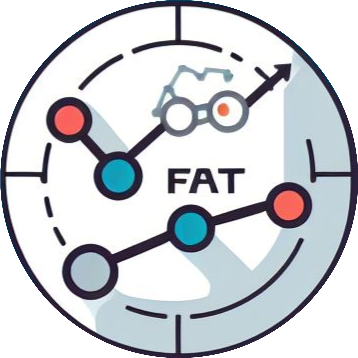

<!-- templates/base.html -->

<!DOCTYPE html>
{% load static %}

<html lang="en">
<head>
    <meta charset="UTF-8">
    <meta name="viewport" content="width=device-width, initial-scale=1.0">
    <meta http-equiv="X-UA-Compatible" content="IE=edge">
    <title>FAT: Financial Analysis Tool</title>
    
    <!-- BootStrap -->
    <link href="https://cdn.jsdelivr.net/npm/bootstrap@5.3.2/dist/css/bootstrap.min.css" rel="stylesheet" integrity="sha384-T3c6CoIi6uLrA9TneNEoa7RxnatzjcDSCmG1MXxSR1GAsXEV/Dwwykc2MPK8M2HN" crossorigin="anonymous">

    <!-- JavaScript Bundle con Popper, para desplegable de Navbar, p. ej. -->
    <script src="https://cdn.jsdelivr.net/npm/bootstrap@5.1.2/dist/js/bootstrap.bundle.min.js" integrity="sha384-kQtW33rZJAHjgefvhyyzcGF3C5TFyBQBA13V1RKPf4uH+bwyzQxZ6CmMZHmNBEfJ" crossorigin="anonymous"></script>

    <!-- JAvaScript para hacer columnas ordenables en tablas -->
    <link rel="stylesheet" type="text/css" href="https://cdn.datatables.net/1.10.24/css/jquery.dataTables.css">
    <script type="text/javascript" charset="utf8" src="https://code.jquery.com/jquery-3.5.1.js"></script>
    <script type="text/javascript" charset="utf8" src="https://cdn.datatables.net/1.10.24/js/jquery.dataTables.js"></script>

    <!-- Para los gráficos de Plotly: Plotly.js -->
    <script src="https://cdn.plot.ly/plotly-latest.min.js"></script>
    
    <!-- Incluyo mis estilos -->
    <link rel="stylesheet" type="text/css" href="{% static 'css/estilos_base.css' %}">
</head>
<body>       
    <nav class="navbar navbar-expand-lg bg-dark navbar-dark">
        <div class="container-fluid">
            <a class="navbar-brand" href="/">
                <!--  -->
                Financial Analysis Tool
                
            </a>
            <button class="navbar-toggler" type="button" data-bs-toggle="collapse" data-bs-target="#navbarNav" aria-controls="navbarNav" aria-expanded="false" aria-label="Toggle navigation">
            <span class="navbar-toggler-icon"></span>
            </button>
            <div class="collapse navbar-collapse" id="navbarNav">
            <ul class="navbar-nav ms-auto">
    
                {% if user.is_authenticated %}
                <!-- Sólo lo muestro si el usuario está registrado -->
                <li class="nav-item">
                    <a class="nav-link" href="/logout">
                         Logout 
                    </a>
                </li>
                <li class="nav-item">
                    <a class="nav-link" href="/dashboard/">
                         DashBoard 
                    </a>
                </li>
                <li class="nav-item">
                    <a class="nav-link" href="/lab/">
                         Lab 
                    </a>
                </li>
                {% else %}
                <!-- Sólo lo muestro si el usuario está sin registrar -->
                <li class="nav-item">
                    <a class="nav-link" href="/login">
                         Login 
                    </a>
                </li>
                <li class="nav-item">
                    <a class="nav-link" href="/signup">
                         Registro 
                    </a>
                </li>
                {% endif %}
            </ul>
            </div>
        </div>
    </nav>
    
    <!-- Los botones de los índices se muestran siempre debajo de la navbar -->
    <main>
        <br>
        <div style="text-align: center;">
            <a href="/mapa/dj30"><button class="btn" style="background-color: #212428; color: #FFFEFE; font-size: 16px; font-family: 'Arial', sans-serif; box-shadow: 0px 3px 5px rgba(0, 0, 0, 0.2); width: 120px;">DJ30</button></a>
            <a href="/mapa/ibex35"><button class="btn" style="background-color: #212428; color: #FFFEFE; font-size: 16px; font-family: 'Arial', sans-serif; box-shadow: 0px 3px 5px rgba(0, 0, 0, 0.2); width: 120px;">IBEX35</button></a>
            <a href="/mapa/ftse100"><button class="btn" style="background-color: #212428; color: #FFFEFE; font-size: 16px; font-family: 'Arial', sans-serif; box-shadow: 0px 3px 5px rgba(0, 0, 0, 0.2); width: 120px;">FTSE100</button></a>
            <a href="/mapa/dax40"><button class="btn" style="background-color: #212428; color: #FFFEFE; font-size: 16px; font-family: 'Arial', sans-serif; box-shadow: 0px 3px 5px rgba(0, 0, 0, 0.2); width: 120px;">DAX40</button></a>
            <!-- <a href="/mapa"><button>Mapa stocks</button></a> -->
        </div>

        {% block content %}
        {% endblock %}
    </main>

    {% block footer %}
    <footer class="footer mt-auto py-3 bg-dark text-white">
    <div class="container text-center">
        <a href="https://github.com/rmt0009alu/FAT">
            
        </a>
        <br><br>
        <p class="mb-0">Designed with <i class="bi bi-heart-fill text-danger">Django</i> by Rodrigo Merino Tovar</p>
        <p>&copy; 2024 FAT</p>
    </div>
    </footer>
    {% endblock %}

</body>
</html>